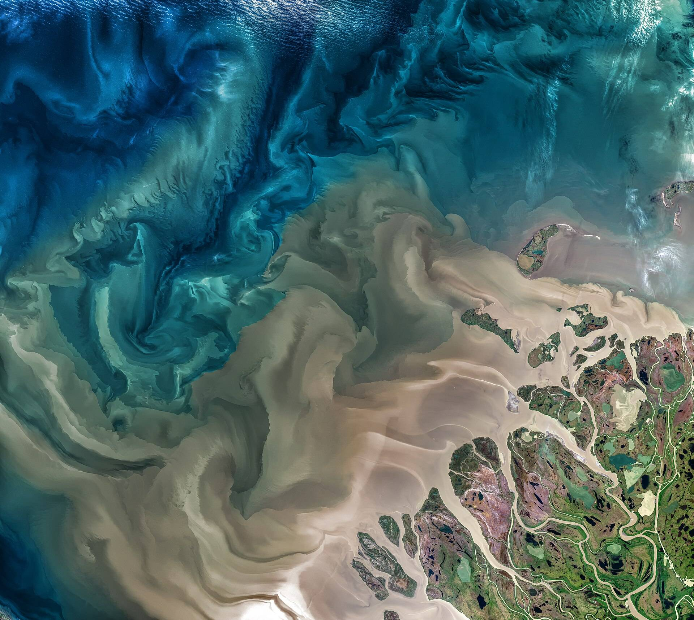

Site69.4012° N, 134.1937° W
Captured6 Oct 2026, 10:51 UTC
Delivered6 Oct 2026, 16:07 UTC
Book the pass over your site.
Any site on earth, delivered within six hours of the capture.
Anywhere a satellite passes
Every latitude, every longitude, one clock.
- Latitude, pole to pole
- 180°
- Longitude, all the way round
- 360°
- Pass to delivery, at most
- 6h
For a claim, a crop, a study
Name the site and the day it matters.

- Insurers
- The roofs before the storm, and the same roofs after it.
- Farmers
- One field on the day it needs checking.
- Researchers
- A study plot on the dates the method sets.
The clock starts at the pass
The order behind the capture at the top of this page.
Pass10:51UTCThe satellite crosses the site.
Delivered16:07UTCThe capture lands in the order.
Window closes16:51UTCSix hours after the pass.
09:00 UTC
12:00 UTC
15:00 UTC
18:00 UTC
Every pass names its delivery hour
Pick the site, then one of its next passes.
New order
Order NS-0142
Site, in decimal degrees38.7290, -9.4730
Area4.0 km²